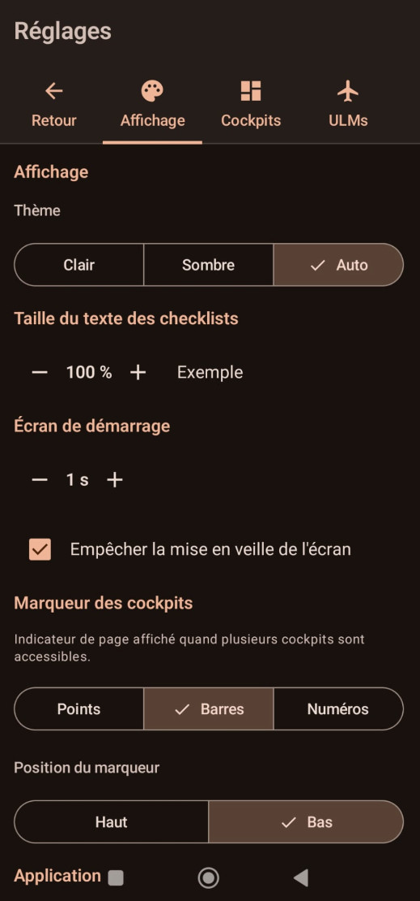

⚙️
Application
Démarrage · splash · veille · thème · quitter l'application
Splash · désactivé / 1s / 2s / 3s
Thème · sombre / auto
Écran maintenu allumé

Possibilités
Démarrage
- Durée de l'écran de démarrage (splash) : Désactivé, 1 s, 2 s ou 3 s (sélecteur pleine largeur).
- Option empêcher la mise en veille : l'écran reste allumé pendant l'utilisation de l'application.
- Thème Sombre ou Auto (suit le réglage du système) — sélecteur pleine largeur.
Application
- Quitter l'application : arrête le service de vol et ferme complètement l'app (les valeurs saisies sont conservées).